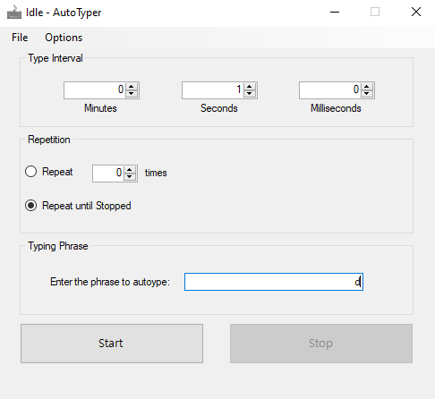

Auto Typer by Kermit

Features
- Automated typing based off selected phrase
- Customizable phrase allowing for any string to be automated
- All language support
- Adjustable time intervals between send
Work in Progress
Additional support for non-Windows devices
Adding a hotkey for starting/stop
Dark Mode
Fixing not starting first time button is clicked
Autosave configuration
Increment button for mins, secs, milliseconds
Download